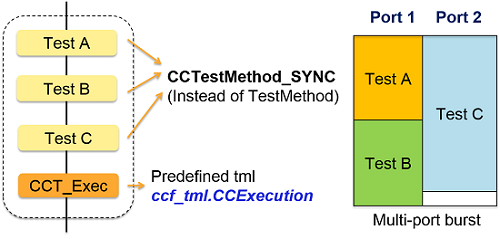
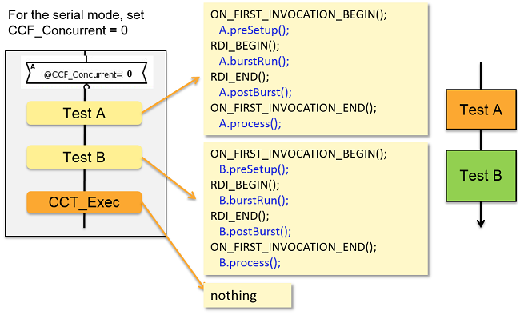
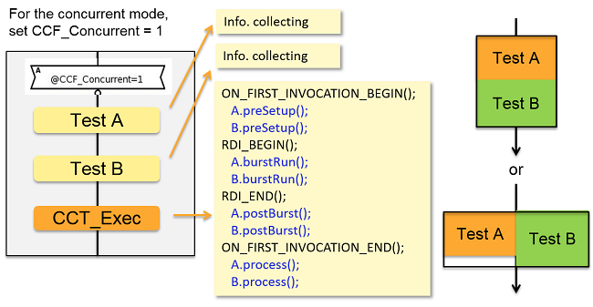
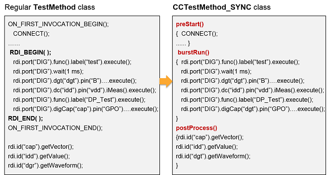
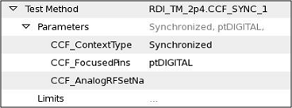
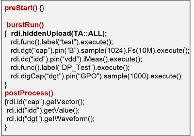
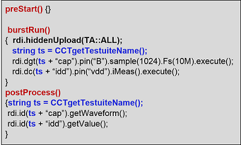

CCTestMethod_SYNC
SmartRDI has a CCTestMethod_SYNC class to achieve multiport burst-based concurrent tests in the testflow level. The class is an extension to the existing concurrent test framework (CCF) in SmarTest 7.
The CCTestMethod_SYNC class is defined in the header file rdi.hpp.
The following image illustrates the CCTestMethod_SYNC class workflow.

Code template
The following code is the CCTestMethod_SYNC class template:
#include "rdi.hpp"
class YourClassName: public CCTestMethod_SYNC {
protected:
virtual void addParameters()
{
}
virtual void preStart()
{
// Add static commands before the burst pattern execution
}
virtual void burstRun()
{
// Add SmartRDI pattern‑based commands
}
virtual void postBurst()
{
// Static commands after the burst pattern execution
}
virtual void postProcess()
{
// Result retrieval, calculation, and datalog, ...
}
virtual void postParameterChange(const std::string& parameterIdentifier)
{
}
};
REGISTER_TESTMETHOD("YourClassName", YourClassName);
Execution mode
You can use the testflow variable CCF_Concurrent to control the execution mode of concurrent tests.- CCF_Concurrent = 1: The concurrent mode is used.
- CCF_Concurrent = 0: The serial mode is used.
The following image demonstrates the serial mode and the code structure.

The following image demonstrates the concurrent mode and the code structure.

Migration from TestMethod to CCTestMethod_SYNC
If you migrate your conventional TestMethod code to the CCTestMethod_SYNC code, you must use the pattern‑based SmartRDI commands in burstRun() and the result retrieval and calculation code in postProcess().
The following image illustrate the code before and after the migration.

Test suite parameters
- CCF_ContextType: Specify this parameter to Synchronized for CCTestMethod_SYNC cases.
- CCF_FocusedPins: Specify this parameter to the ports defined in port() and burstRun().
- CCF_AnalogRFSetNa: Do not specify this parameter and leave it empty.
For example,

Hidden upload in CCTestMethod_SYNC
- Put rdi.hiddenUpload() as the first command in burstRun().
- Configure the hidden upload per test suite.
- All result IDs in burstRun() must be unique in testflow.

To make result IDs unique in testflow, you can use the test suite as a key.

Functional changes
- Introduced in SmartRDI 2.4.0